Komendy Administracyjne
useradd <użytkownik>
Dodanie nowego użytkownika do systemu
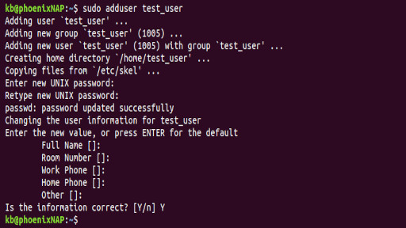
userdel <użytkownik>/userdel -r <użytkownik>
Usunięcie użytkownika z systemu
-r usuwa również katalog, który linux tworzy dla każdego użytkownika
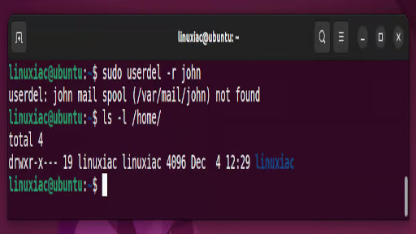
usermod
Modyfikacja konta użytkownika, by poznać szczegółowe informacje do wykorzystania komendy polecamy użyć --help przed dokonywaniem zmian
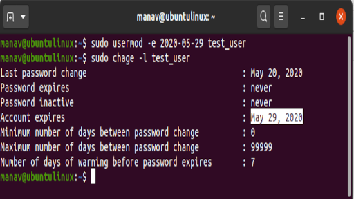
groupadd <group>
Utworzenie nowej grupy
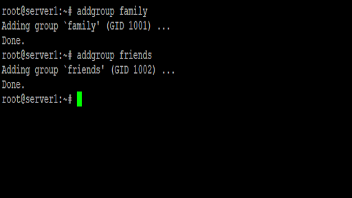
systemctl status
Sprawdzenie statusu usługi
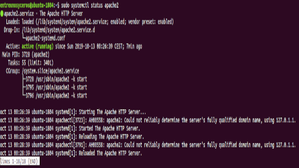
systemctl start/ systemctl enable
Uruchomienie usługi, systemctl enable sprawia że usługa automatycznie uruchomi się przy uruchomieniu systemu
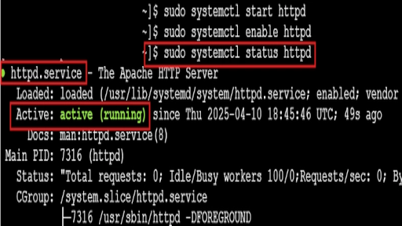
systemctl stop/ systemctl disable
Zatrzymanie usługi, systemctl disable wyłącza usługę permamentnie co oznacza że nie włączy się ona po zrebootowaniu systemu
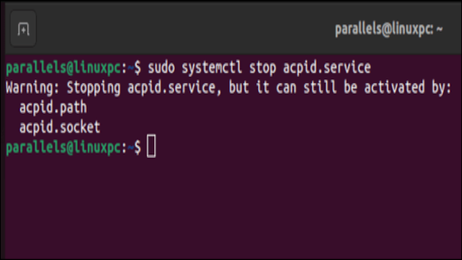
systemctl restart
zrestartowanie usługi
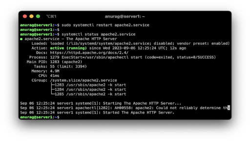
Karty sieciowe
systemctl restart NetworkManager
Restartuje usługę zarządzania siecią.
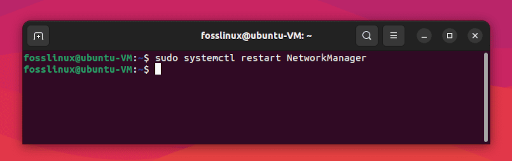
ip link set eth0 up
Włącza interfejs sieciowy.
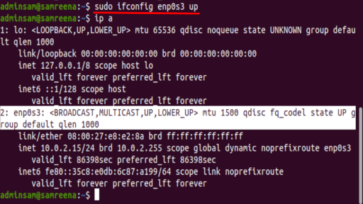
ip link set eth0 down
Wyłącza interfejs sieciowy.
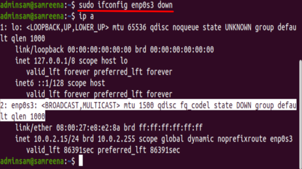
dhclient eth0
Pobiera adres IP z serwera DHCP.
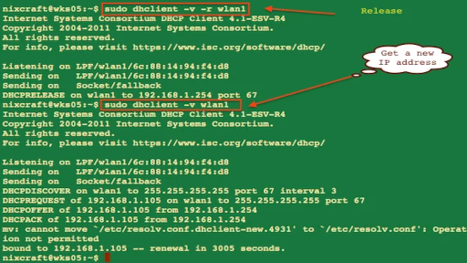
nmcli networking off
Wyłącza wszystkie sieci zarządzane przez NetworkManager.
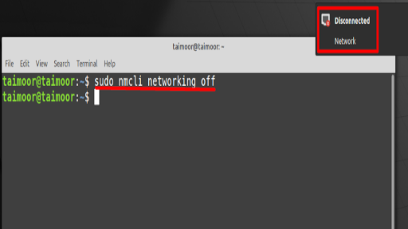
nmcli networking on
Włącza wszystkie sieci zarządzane przez NetworkManager.
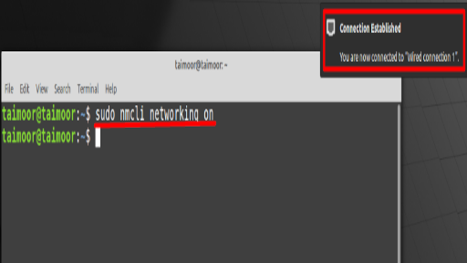
ip addr add 192.168.1.100/24 dev eth0
Tymczasowo ustawia adres IP.
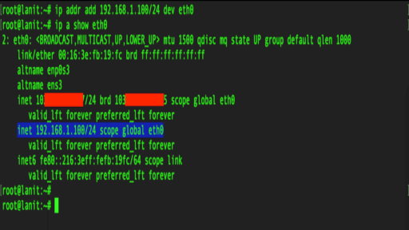
ip route add default via 192.168.1.1
Ustawia domyślną trasę (bramę).
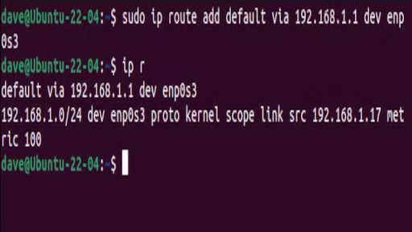
📘 Powyższe komendy wymagają uprawnień administratora do poprawnego wykonania